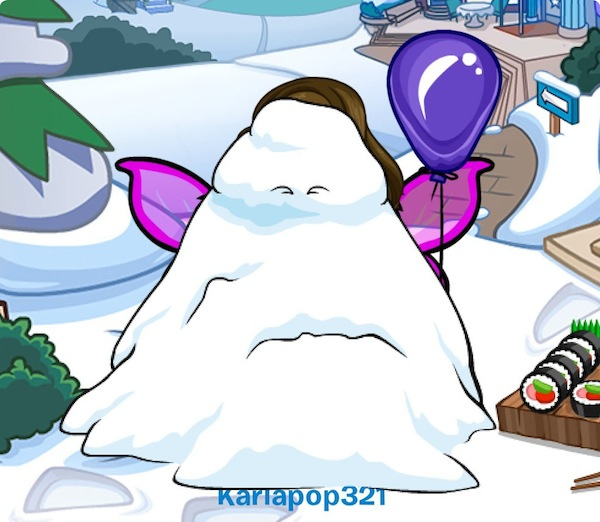
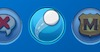

Navegando en el Blog Oficial de Club Penguin, me encontré una actualización en My Penguin, esta consiste que al arrojar una bola de nieve a un jugador este se llenara todo de nieve en la Tarjeta de Jugador, esto es lo que nos dijo la moderadora Karlapop321:
¡Hola!
¿Cómo está la pingüinada? Os quería contar una cosa que me ha pasado… Hoy cuando me he conectado a la aplicación de Club Penguin desde mi iPad, ¡he recibido un montón de bolas de nieve! ¡¡Me he quedado helada!!

Así que he decidido lanzar algunas bolas de nieve a mis amigos, ¡me lo he pasado genial! ¿Sabéis cómo se hace? ¡Es superfácil!
Primero abre tu lista de amigos y selecciona a quién quieres lanzar la bola
En la carta de jugador toca en el icono de la bola de nieve

Afina tu puntería y… ¡TOCA PARA ARROJAR!
Cuando tu amigo se conecte en la aplicación de Club Penguin, ¡va a recibir una sorpresa de tu parte!
¿Cuáles son vuestros mejores trucos para hacer una MEGABOLA de nieve? Tal vez podríamos organizar una batalla en el fuerte nevado pronto, ¿qué os parece?
¡Nos vemos en 321!
-El Equipo de Club Penguin
La verdad es que esta nueva actualización es bastante buena y a la vez divertida.
¿Qué piensas tu?
¡Recuerda comentar y compartir!
@Bowser200 @PenguinManiaEs